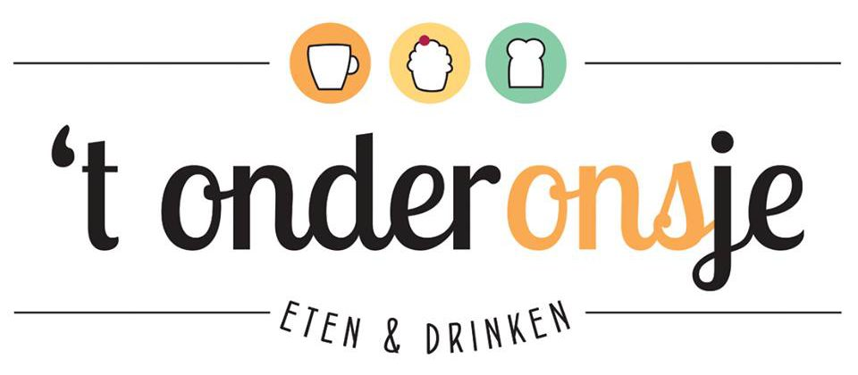
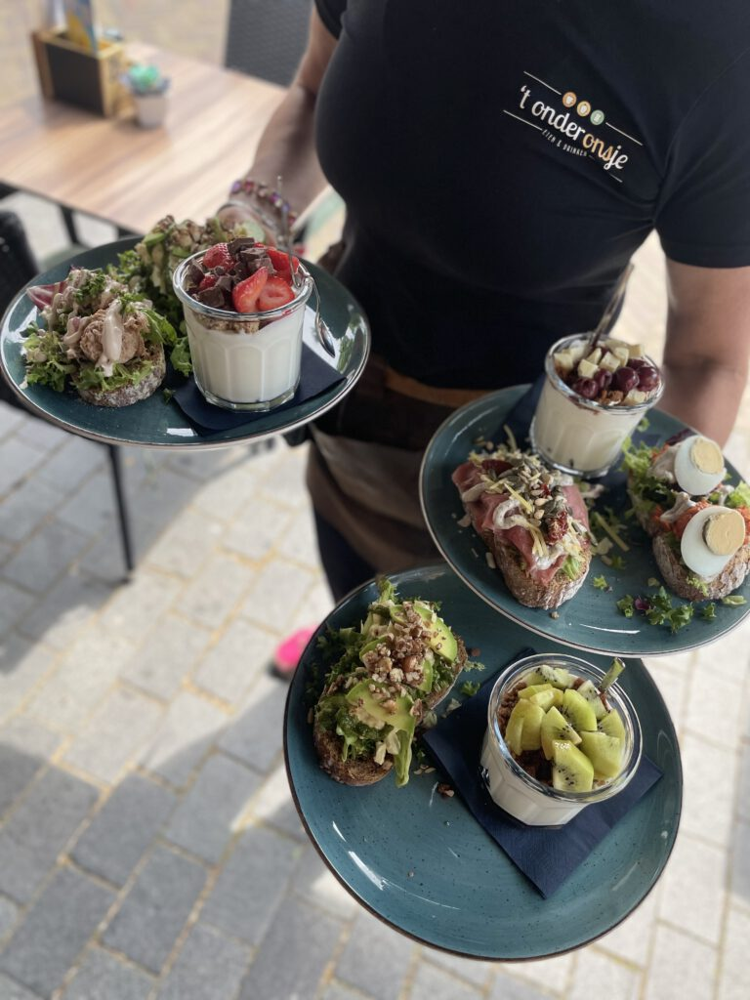
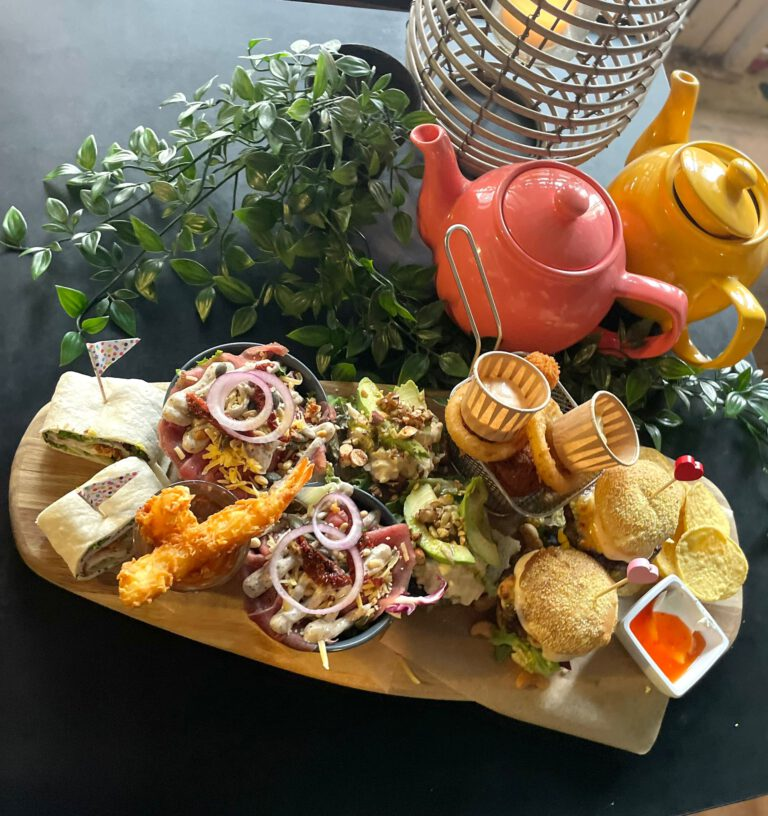
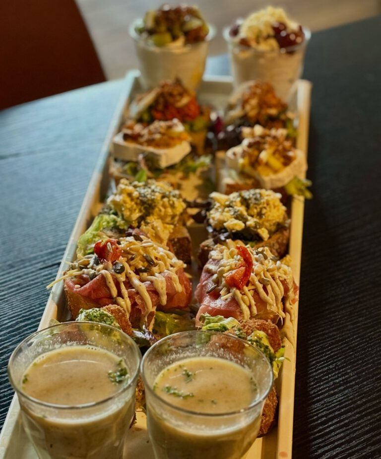
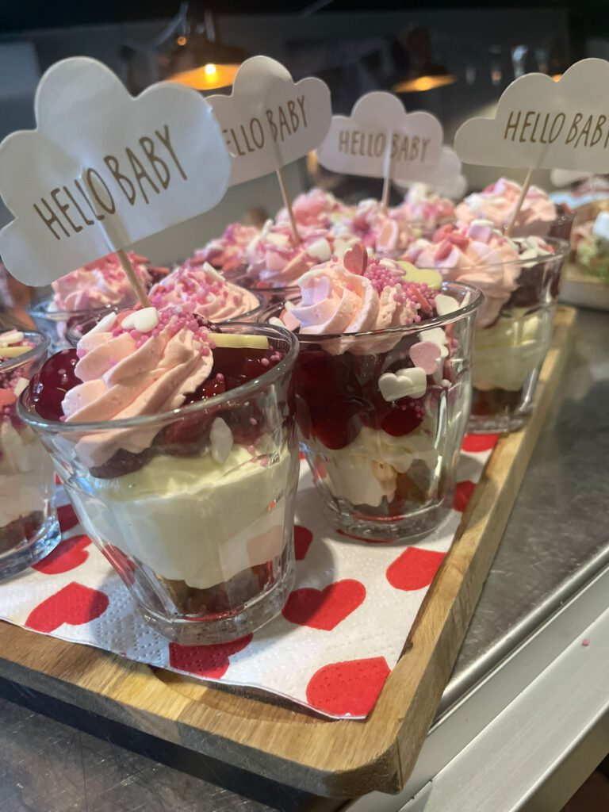
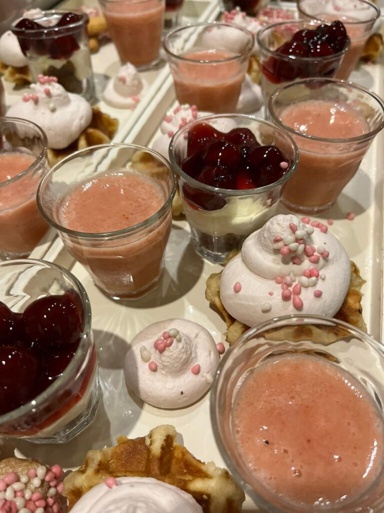
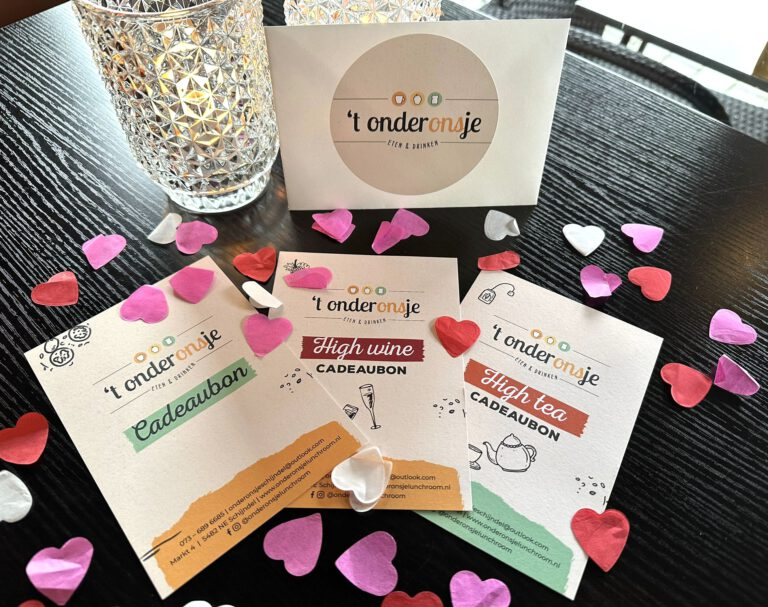

’t Knusse Onderonsje
Een plankje met kleine broodjes, een smakelijk soepje en een verfrissend yoghurtje: een gezellige en vullende lunch. Vanaf 2 personen, 18,50 p.p.

Lunchroom in het centrum van Schijndel. Gezellig lunchen, high tea of gewoon een goede kop koffie, met alles wat erop staat met veel aandacht geserveerd.
Elke dag geopend van 10:00 tot 17:00 uur · Markt 4, Schijndel


Koffie & theeVan cappuccino tot verse munt- en gemberthee
Gebak & zoetHuisgemaakte monchou, appeltaart en de Bossche bol
LunchOp vers boerenbrood van Bakkerij Snijers
Een knusse en gezellige inrichting biedt ruimte aan ruim 40 personen om heerlijk ontspannen te lunchen en/of een drankje te drinken. De naam kenmerkt de sfeer: een ruimte waar jong en oud elkaar ontmoeten voor een gezellig ‘onderonsje’.
Een gesprek, gezellig samenzijn, een huiselijk feestje: dat stralen de inrichting, de sfeer en het aanbod uit. Op zomerdagen pakt u op onze gezellige binnenplaats of het kleine terras aan de voorkant een zonnestraal mee bij uw hapje en drankje.
De lunchkaart is bewust klein: broodjes (warm en koud), salades, kleine broodjes voor wie niet kan kiezen, borrelhapjes, gebak, smoothies, koffie en thee, frisdrank, wijn en bier. Elke week staat er een specialiteit op het krijtbord.

Twee tot tweeënhalf uur onbeperkt koffie, latte macchiato, cappuccino en verse (munt)thee, met een uitgebreid assortiment koude, warme, hartige en zoete lekkernijen.
32,50 p.p. onbeperkt thee en/of koffie
34,50 p.p. ook cappuccino en latte macchiato
18,75 p.p. kids high tea, tot 12 jaar
Dagelijks behalve op zaterdag, om 10:30 of 14:00 uur, vanaf twee personen. Reserveer minimaal 24 uur vooraf. Het menu kan per seizoen afwijken; heeft u een allergie, neem dan eerst contact met ons op.
High tea reserverenOf het nu gaat om een babyshower, verjaardag, vrijgezellenfeest of jubileum: bij ons ben je aan het juiste adres.
Een plankje met kleine broodjes, een smakelijk soepje en een verfrissend yoghurtje: een gezellige en vullende lunch. Vanaf 2 personen, 18,50 p.p.
Voor een extra special: een soepje, luxe gerechtjes en een klein monchoutje. Op reservering uit te breiden voor een grotere groep. Niet vegetarisch mogelijk. 22,50 p.p.
We passen de setting graag aan naar jouw voorkeur, met decoraties in roze of blauw, en verwerken die kleuren ook in onze gerechten.


Of kies voor onze high tea. Heb je allergieën? Geef ze tijdig aan ons door. Meer weten? Bel 073-6896685 of mail onderonsjeschijndel@outlook.com.

Cadeaubonnen zijn verkrijgbaar in onze lunchroom, ook voor een high tea of high wine. Vragen? Bel 073-6896685 of mail onderonsjeschijndel@outlook.com.
U kunt telefonisch reserveren of een e-mail sturen. Elke ochtend en elke avond verwerken we de reserveringen. Wilt u nog voor vandaag reserveren? Dat kan alleen telefonisch.
Elke dag geopend van
10:00 tot 17:00 uur
High tea om 10:30 of 14:00 uur, niet op zaterdag.